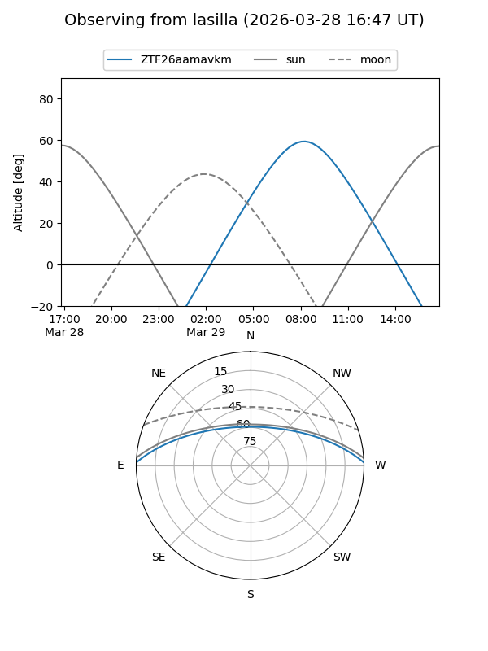
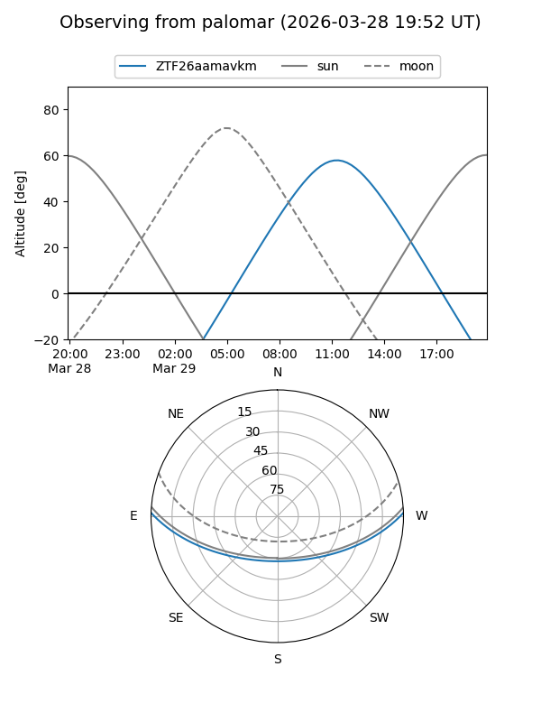

ZTF26aamavkm
Target ZTF26aamavkm at 2026-03-29 13:43
Aliases and brokers:
FINK: link
Lasair: link
ALeRCE: link
alt names
ZTF26aamavkm (ztf,fink_ztf)
Coordinates:
equatorial (ra, dec) = 238.9392,+1.37955
equatorial (HMS+DMS) = 15:55:45.41,+01:22:46.37
galactic (l, b) = (10.6698,+38.91340)
Flags:
Photometry:
last ztfg=17.59, ztfr=16.66
1 ztfg, 1 ztfr detections
Lightcurve
Visibility


Additional plots